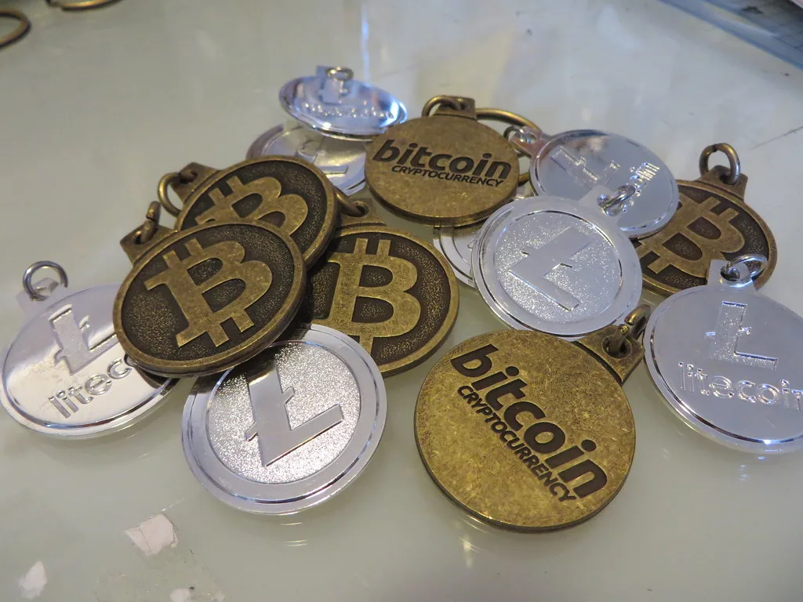

韓, 글로벌 가상자산 채택지수 5위…브라질 1위·미국 2위
글로벌 블록체인 분석업체 체이널리시스가 23일(현지시간) '2026 글로벌 가상자산 채택지수'를 공개했다. 전 세계 117개국을 대상으로 평가한 이번 지수에서 한국은 5위에 올랐다. 1위는 브라질이 차지했고 미국이 2위, 나이지리아가 3위, 일본이 4위를 기록했다. 한국 뒤로는 인도, 우크라이나, 태국, 남아프리카공화국, 캐나다가 6위부터 10위까지 순위를 이었다. 아시아 국가 중에서는 일본에 이어 두 번째로 높은 순위를 기록한 셈이다.
체이널리시스는 이 지수를 산출하면서 중앙화 거래소 등 서비스로의 자금 유입 규모, 국내 개인 간(P2P) 거래 규모, 국경을 넘나드는 자금 이동, 온체인 잔액 등 네 가지 지표를 종합했다고 설명했다. 단순히 거래대금 총액만 비교하는 것이 아니라 각국 경제 규모 대비 가상자산 활용도를 함께 반영하는 방식으로, 신흥국이 상위권에 다수 포진하는 결과로 이어졌다는 분석이다. 이 때문에 시가총액 기준으로는 상대적으로 작은 국가들도 실질 채택도 지표에서는 선진국을 앞지르는 사례가 나타난다.
세부 지표를 보면 거래소·디파이(DeFi) 서비스로의 자금 유입액은 직전 조사 대비 4.3% 줄어든 반면, 국내 개인 간 거래 규모는 302.9% 급증한 2287억달러로 집계됐다. 국경 간 스테이블코인 이동 규모도 77.5% 늘어난 것으로 나타났다. 체이널리시스는 이런 흐름에 대해 중앙화 거래소를 거치지 않는 개인 간 거래와 스테이블코인을 활용한 송금이 전 세계적으로 빠르게 늘고 있음을 보여주는 결과라고 설명했다.
보수적으로 추산한 월간 국경 간 스테이블코인 이동액은 2025년 1월 110억달러에서 2026년 6월 240억달러로 1년 반 만에 두 배 넘게 증가한 것으로 나타났다. 체이널리시스는 이런 증가세가 특정 지역에 국한되지 않고 여러 대륙에서 동시다발적으로 나타나고 있다고 밝혔다. 다만 이번 조사에서 평가 범위와 산출 방식이 이전과 달라진 만큼, 과거 순위와 이번 순위를 단순 비교하기는 어렵다고 체이널리시스는 덧붙였다.

1위를 차지한 브라질은 중남미 지역 전체의 가상자산 활동이 9.8% 늘어난 가운데 개인 간 거래와 스테이블코인 활용이 두드러진 것으로 평가됐다. 신흥국 중심으로 상위권이 형성된 배경에는 자국 통화 가치 불안이나 물가 상승에 대응해 스테이블코인을 대체 저축·송금 수단으로 활용하려는 수요가 자리하고 있다는 해석도 나온다. 한국이 5위에 오른 것 역시 국내 투자자들의 활발한 거래 활동이 반영된 결과로 풀이된다.
국내 가상자산 업계에서는 이번 순위 발표를 계기로 규제 정비 논의에도 속도가 붙을 수 있다는 전망이 나온다. 스테이블코인과 개인 간 거래 비중이 커지는 흐름은 자금세탁 방지나 이용자 보호 측면에서 새로운 감독 수요를 낳을 수 있기 때문이다. 업계 관계자들은 글로벌 순위에서 상위권을 유지하는 것과 별개로, 국내 제도권이 이런 변화에 얼마나 신속하게 대응하는지가 앞으로의 시장 건전성을 가늠할 척도가 될 것으로 내다보고 있다.
체이널리시스는 매년 이 지수를 발표하며 각국 정책 당국과 업계가 가상자산 생태계의 변화 방향을 가늠하는 참고 자료로 활용해왔다. 이번 조사에서 개인 간 거래와 스테이블코인 비중이 두드러지게 늘어난 점은, 각국 감독 당국이 거래소 중심 규제에서 한발 더 나아가 탈중앙화된 자금 흐름까지 들여다봐야 할 필요성을 시사한다는 평가도 나온다. 한국 역시 이런 국제적 흐름에서 예외가 아니라는 지적이 이어지고 있다.